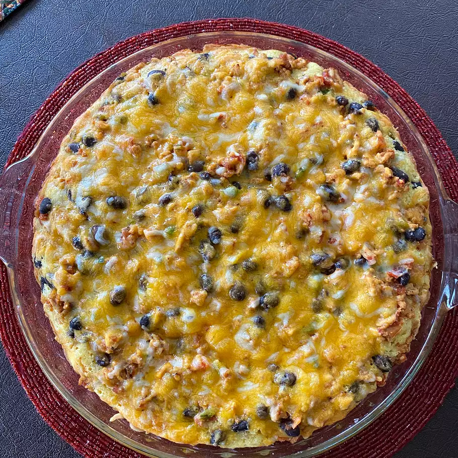

Taco Bake Recipe
Description:
Easy taco bake that reheats wonderfully! With beans and rice its a great meal you can store in your fridge that you can reheat when u need a quick bite.
Indgredients:
- 1 lbs. ground beef
- 1(1 ounce) pachage of taco seasoning mix
- 1 cup salsa
- 1/2(15 ounce) can black beans, rinsed and drained(Optional)
- 1(8.5 ounce) package corn bread mix(such as Jiffy)
- ⅓ cup milk
- 1 egg
- 1 tablespoon honey
- 1 tablespoon corn oil
- ½ cup corn (Optional)
- 1 cup shredded Cheddar cheese
- 1 cup corn chips, partially crushed
Steps:
- Cook and stir ground beef in a skillet over medium heat until brown and crumbled, 7 to 10 minutes; drain grease. Add taco seasoning; mix well. Stir in salsa and black beans; remove from the heat.
- Grease a 9-inch pan or casserole dish.
- Mix corn bread mix, milk, egg, honey, and corn oil together in a bowl until batter is smooth; stir in corn. Pour batter into pie pan. Layer ground beef mixture over batter; sprinkle with Cheddar cheese. Top with corn chips.
- Place in a cold oven; set temperature to 350 degrees F (175 degrees C). Bake until sides are golden brown, 30 to 35 minutes.
Go Back
- Cook and stir ground beef in a skillet over medium heat until brown and crumbled, 7 to 10 minutes; drain grease. Add taco seasoning; mix well. Stir in salsa and black beans; remove from the heat.
- Grease a 9-inch pan or casserole dish.
- Mix corn bread mix, milk, egg, honey, and corn oil together in a bowl until batter is smooth; stir in corn. Pour batter into pie pan. Layer ground beef mixture over batter; sprinkle with Cheddar cheese. Top with corn chips.
- Place in a cold oven; set temperature to 350 degrees F (175 degrees C). Bake until sides are golden brown, 30 to 35 minutes.